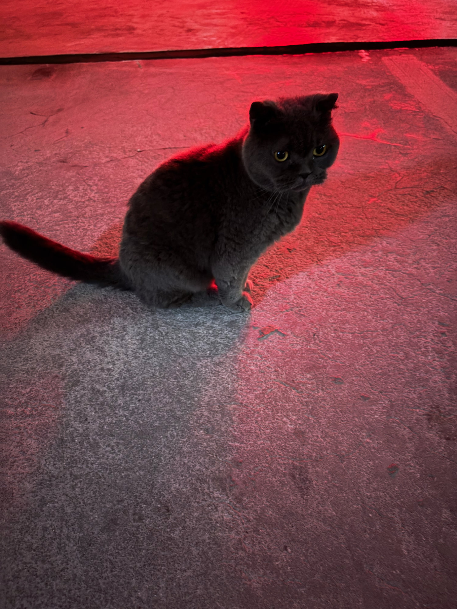

Photo · 2026
红色汽车尾灯倒影中被遗弃的蓝猫
这是一幅充满戏剧张力与感伤气息的肖像：一只被遗弃的英国短毛蓝猫，孤独地坐在地下车库粗糙的水泥路面上。整个场景被汽车尾灯散发出的浓烈、忧郁的红光所笼罩。猫咪眼神中透着哀伤与忧郁，传递出一种深深的孤独、被背叛的无助以及努力求生的气息。
那天我去地下车库取车，在水泥路面上刚驶出一小段，就看到这只蓝猫停留在路中央，眼神闪亮。
我驱车越过它，本想继续开走。但就在这么想的下一秒，我却停了下来，走下车往回看。那时它也正看着我，而且竟然慢慢向我走来，接近时轻喵了几声，那声音到现在仍然无法形容，无助的、落寞的、绝望的、祈求的，一种让人心碎的声音。
但我除了给它留点吃的在那儿，却无法真正帮助它。
在汽车尾灯红色光晕的倒映中，这只蓝猫就那样坐在那儿，眼神茫然，这世界让它很失望吧？
我离它很近，它没有马上跑走。我把手贴着地面用手机拍下了这张照片。